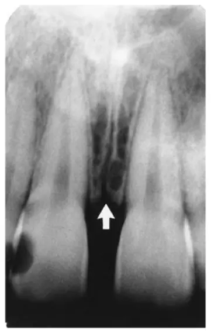
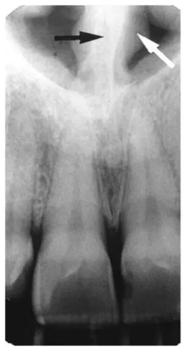

نسخه استخراجشده؛ ترجمه یا تأیید علمی انجام نشده است. وضعیت: captured
روی پریاپیکال سانترالهای بالا، یک خط باریک تاریک درست وسط دیده میشود. بیمار هیچ شکایتی ندارد. این چیست؟

سوچور اینترماگزیلاری. زوائد آلوئولار و پالاتین در خط وسط با هم مفصل میشوند و همین درز را میسازند. روی پریاپیکال داخلدهانی «بهصورت یک خط نازک رادیولوسنت در خط وسط میان دو بخش پرهماگزیلا» دیده میشود.
مسیرش را حفظ کن: «از کرست آلوئولار میان سانترالها به سمت بالا از میان خار قدامی بینی امتداد مییابد و بهسوی عقب میان زوائد پالاتین ماگزیلا تا بخش خلفی کام سخت ادامه پیدا میکند.»
و اشتباه رایج: «غیرمعمول نیست که این سوچور باریک در کرست آلوئولار به یک بزرگشدگی کوچکِ گرد یا V شکل ختم شود.» این یک واریاسیون نرمال است و «نباید با از دست رفتن استخوان آلوئولار مرتبط با بیماری پریودنتال اشتباه شود».
در CBCT چه شکلی است؟ بهترین ارزیابی روی مقاطع کرونال و اگزیال است. سوچور «با دو حاشیهی موازی رادیواوپک از استخوان کورتیکال نازک در هر طرف ماگزیلا محدود شده» و ناحیهی رادیولوسنتش معمولاً پهنای یکنواخت دارد. حاشیههای کورتیکال مجاور میتوانند صاف یا کمی نامنظم باشند.
و یک کاربرد بالینی که کمتر به آن فکر میکنی: «ارزیابی سوچور اینترماگزیلاری در برنامهریزی اکسپنشن ارتودنتیک کام اهمیت دارد.»
خار قدامی بینی (ANS). اغلب روی پریاپیکال سانترالهای ماگزیلا دیده میشود. در خط وسط، «تقریباً ۱٫۵ تا ۲ سانتیمتر بالاتر از کرست آلوئولار» قرار دارد، معمولاً در محل یا کمی پایینتر از محل اتصال انتهای تحتانی سپتوم بینی با خط تحتانی دهانهی بینی. رادیواوپک است چون استخوانی است، و معمولاً V شکل. در CBCT روی مقاطع اگزیال و ساژیتال بهتر دیده میشود، به شکل یک برجستگی مثلثی از سطح قدامی ماگزیلا در تراز کف بینی.
چون حفرهی پرهوای بینی درست بالای حفرهی دهان است، تصویر رادیولوسنتش روی رادیوگرافی دندانهای ماگزیلا میافتد — بهویژه در پروجکشن سانترالها.

سه ساختار را به ترتیب بشناس:
چرا سپتوم پهنتر از انتظار و بیمرزِ تیز دیده میشود؟ چون «تصویر، سوپرایمپوزیشن غضروف سپتال و استخوان وومر است». و «سپتوم مکرراً کمی از خط وسط منحرف میشود و صفحهی استخوانیاش (وومر) خمیده است».
یک واریاسیون شایع با نام مخصوص: پنوماتیزاسیون کونشا را کونکا بولوزا مینامند؛ «واریانت شایعی با فراوانی گزارششدهی ۱۴ تا ۵۳ درصد».
کف بینی و کام سخت. زوائد پالاتین «برجستگیهای استخوانی افقی ضخیمی هستند که سهچهارم قدامی کام سخت و کف حفرهی بینی را میسازند». کف دهانهی بینی و بخش کوچکی از حفرهی بینی گاهی بالای کلیشهی کانین ماگزیلا هم دیده میشوند.
و اشتباهی که در ماگزیلای خلفی پیش میآید: در ناحیهی خلفی، کف حفرهی بینی ممکن است در ناحیهی سینوس ماگزیلاری دیده شود و «بهغلط تصور یک سپتوم درون سینوس یا دیوارهی فوقانی محدودکنندهی سینوس را القا کند».
و در CBCT: گسیختگی کام سخت «به اختلالات تکاملی مانند شکاف کام اشاره میکند». توروسها بهویژه در خط وسط شایعاند، و کانالهای نوترینت متعددی هم ممکن است در اسکنهای با وضوح بالا خط کورتیکال کام سخت را سوراخ کرده باشند.
نوع سؤال: ساخت کلمه · 9 خانه
حروف منبع: ا · و · د · و · ا · پ · ک · ی · ر
نوع سؤال: ساخت کلمه · 5 خانه
حروف منبع: ا · و · ک · ن · ک